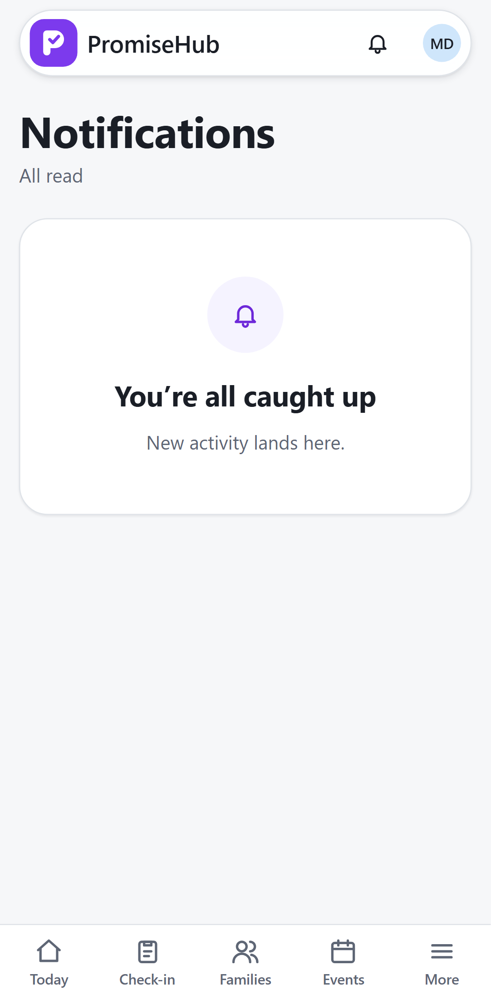
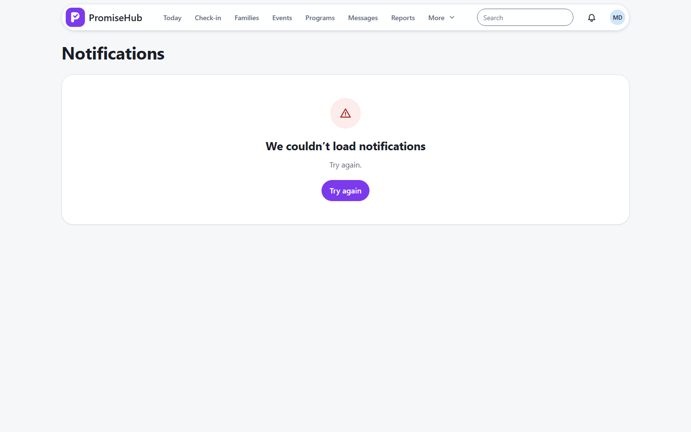

PromiseHub · Video 35
Review notifications
What needs you, without having to look for it
What needs you, without having to look for it
Two unread, then all read.


| Case | Answer |
|---|---|
| Youth worker reads someone else's | 404 |
| Another organization | None listed |
| Incidents off | Hidden, then restored |
Next: configure notifications